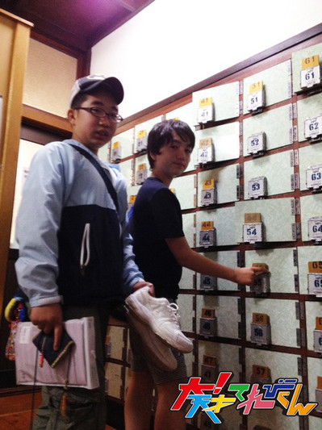

<<2013年5月 | トップページ | 2013年7月>>
2013年6月
【私のアイドル】相澤侑我
★私のアイドル★
アイドルは、もちろん！
歌手・タレントの郷ひろみさんっ(^-^)/
昔から昭和歌謡が好きで、
郷ひろみさんの歌う歌はカックイーイってずっと思ってました♪(´ε｀ )
なんといっても、あの透きとおる声！
『言えないよ』(1994)なんてもうもうもうサイコーっ\(//∇//)\
郷ひろみさんは、西城秀樹さん、野口五郎さんと3人で
新・御三家 と呼ばれて絶大な人気を誇っていました……
（ここからは長ったらしい文章が続くので省略）
でも、郷ひろみさんだけッ！て限られてるわけでもないですよぉ(^_^)
松田聖子さんも好きだし、西田敏行さんも好き、
中森明菜さんも山口百恵さんもダイッスキ( ^ω^ )
昭和のアイドルなら誰でも好きです☆
でも1番好きな人は…………
やっぱり郷ひろみさんかなぁ?
最近は、郷ひろみさんの『バイブレーション（胸から胸へ）』(1978)
なんかも気にいってますよ(^o^)
じゃあねー(^_−)−☆
★最近の身近なできごと★
みんな、チョコレートフォンデュって知ってる？
あるお店で小さい滝みたいな所から液状のチョコレートが流れてきて、
それをチョコレートのお菓子やマシュマロなんかに付けて食べるんですよ(^｡^)
その流れてくるチョコが温かいの(^^)
だから、フワッフワッのマシュマロに温かいチョコレートが絡み合って……
あゝ、なんという絶妙なハーモニー！
ちなみにこの時に見たチョコレートフォンデュは時間制限があって
「●●時から●●時までチョコ流します」っていうアナウンスが入った後、
滝からトロンってチョコが流れてくるんですよ☆
……………サイコー…………。
また食べたい(≧∇≦)
だって僕、マシュマロ大大大大大大大大大大大大大大好きだもん(^ ^)
じゃあねー(^_−)−☆
投稿者:相澤侑我 | 投稿時間:18時00分 | カテゴリ：We are 大天才テレビジョン | 固定リンク


 " title="ソーシャルブックマークについて">
" title="ソーシャルブックマークについて">
※NHKサイトを離れます。
【大！木曜LIVE】チャンカワイの大！相撲中継
『チャンカワイの大！相撲中継』
第3回は、神奈川県南足柄市におじゃましました。
4月に登場して以来、2ヶ月ぶりの復帰となった「チャン錦」（チャンカワイ）は、
南足柄市のご当地ヒーロー「キンタローマン」と対決。
結果は、予想通り・・・負けてしまいました！
果たして、「チャン錦」の初勝利はいつになるのか・・・
（南足柄市のご当地ヒーロー「キンタローマン」・ゆるキャラ「よいしょの金太郎」と記念の1枚）
対戦したいという方はこちらから応募してください。
投稿者:大天才テレビジョン社員３号 | 投稿時間:15時03分 | カテゴリ：大！木曜LIVE | 固定リンク
" title="ソーシャルブックマークについて">
※NHKサイトを離れます。
最強アバターを決める「アバタイセン」〜第3戦〜
地上最強のアバターを決める超大型企画「アバタイセン」。今回は第3戦。
大天才テレビジョン内部にあるコンピューターが自動対戦した結果、
全世界に存在する全20787体のアバターの頂点に立ったのは…
神奈川県 ゆーぴーさん
おめでとう！
ベスト８の対戦結果はこちらです（左クリックで拡大します）。
アバターの強さは、『パーツ』や『色』の組み合わせで変わります！
番組HPにあるトレーニングセンターで自分のアバターと、てれび戦士や出川特命Pの
アバターと対決させて、最強アバターになる組み合わせを見つけてほしい！
君も最強のアバターを作って対戦の時を待て！
アバターの制作はこちらから！
投稿者:大天才テレビジョン社員１号 | 投稿時間:18時54分 | カテゴリ：大！木曜LIVE | 固定リンク
" title="ソーシャルブックマークについて">
※NHKサイトを離れます。
【私のアイドル】野田真哉
★私のアイドル★
僕のアイドルはサッカー日本代表の長友佑都選手です。
部活でサッカーをやっているんですが、きっかけは長友選手でした。
ある日遊びに行って帰って来ると、僕はテレビにくぎづけになりました。
長友選手のゴールシーンです。
カッコイイ！サッカー本気でやりたい！
僕はそう思いました。
サッカーをやりはじめてまだ短いですが、部活で試合に出れるように頑張ってます！
いつか長友選手のようなゴールを決めてやるっ！！！
★最近の身近なできごと★
そーいえば！
この前の放送でやってたワルラジ女子会でのことです。
みはるっちがまさかの太一に告白。
あれはびっくりしましたねー。
最近で一番びっくりしたんじゃないかな？
恋バナ好きなんで何度も見ました！
自分、男だけど女子会やりたいですww
おかまとかじゃないですよ！
投稿者:野田真哉 | 投稿時間:18時00分 | カテゴリ：We are 大天才テレビジョン | 固定リンク
" title="ソーシャルブックマークについて">
※NHKサイトを離れます。
【私のアイドル】中里萌
★私のアイドル★
アイドルというか、憧れている人なんですけど、
「少女時代」です。
みんな、おどり上手だし、歌うまいし、かわいいし、スタイルいいし。
完璧です！
私も少女時代みたいになれればな・・・（笑）
ムリだけど・・・
★最近の身近なできごと★
最近、いつとかに限らず、涙もろくなりました。
学校の行事とか、天てれでの収録でも、感動することがあると・・・
すぐ泣いてしまいます！！
今まではこらえられたのですが・・・（笑）
涙腺が弱くなってきたのですかね（笑）
お母さんには、《 おばさん 》と言われました（笑）
投稿者:中里萌 | 投稿時間:18時00分 | カテゴリ：We are 大天才テレビジョン | 固定リンク
" title="ソーシャルブックマークについて">
※NHKサイトを離れます。
【MTK】「マジックアワー」
6/24に放送が始まったMTK「マジックアワー」。
演奏しているのは、結成10年を迎えた女子6人組のスカロックバンド、オレスカバンドです！！
作曲はVocal,Guitarを担当するiCas、作詞はDrumsのtaeが担当しています。
オレスカバンドの皆さんは、小学生のころ毎日「天才てれびくん」を見てくれていたそう。
その頃に見た景色や気分を、詞曲にぎっしり詰めこんでくれました！
歌っているのは、ニイナ、萌、美晴、黒澤の女子４人組。
梅雨空じめじめ気分を吹っ飛ばす、爽やかな曲に仕上がってます！
是非ご一聴くださいませ。
投稿者:大天才テレビジョン音楽制作部 | 投稿時間:18時54分 | カテゴリ：お知らせ！ | 固定リンク
" title="ソーシャルブックマークについて">
※NHKサイトを離れます。
【私のアイドル】中尾美晴
★私のアイドル★
アイドルとは違うけど美晴の憧れの人は！！
それはロンドンオリンピック、水泳のメダリスト、「入江陵介選手」。
なぜ憧れてるかって！！
美晴が目標としている「文武両道」を入江君は実現できてはるから。
美晴は小さい頃から、水泳選手として頑張ってた。
なんと！入江君と同じスイミングスクール、同じ背泳ぎが専門やった！
だから活躍していた入江君に憧れてたわ☆
しかも！！知ってた？
入江君はピアノもすごく上手！！
入江君が弾いたのはショパン作曲の「小犬のワルツ」。
だから美晴もこの曲をピアノの発表会で弾ける様、一生懸命練習したで☆
入江君は水泳以外の事もできる。ピアノも勉学も。すごいな。
美晴も入江君みたいに文武両道実現できる様、頑張るわー。
★最近の身近なできごと★
卓球部に入ったよ！
初めて卓球したわ。
思ったよりも上手にできて楽しかった。
先生にも「中尾、サーブ上手！」って！！
少し練習してから、総当たり戦をした。
自分、才能あるわと思ってめっちゃ勝つ自信あった！！
結果： ・・・・・全敗(T△T)
次頑張る！
投稿者:中尾美晴 | 投稿時間:18時00分 | カテゴリ：We are 大天才テレビジョン | 固定リンク
" title="ソーシャルブックマークについて">
※NHKサイトを離れます。
【押忍！シャイ番長友情の旅】 第８回 金子の日記
「押忍！シャイ番長友情の旅」８回目の放送、ご覧いただけましたか？
シャイ番長が大学の学食で固まっていた時間が長すぎて、
まさか、大学にまで来て、女子大生に誰にも声をかけずに終わるのか…とスタッフ一同あきらめかけた、そのとき！
シャイ番長、都留文科大学3年生の今井咲奈さんと友達になることができました！
今井さんは、たまたま次の日に授業がない日だったので、突然の
シャイ番長の無謀な申し出にも、快くOKしてくれたんです。
本当にありがとうございました。
ボートに乗るのは、実は、今井さんもシャイ番長も初体験。
転覆しないで良かった…。
山あり谷ありの展開を、シャイ番長の日記でもお楽しみください。
左クリックをすると、原寸大になります。
投稿者:大天才テレビジョン社員２号 | 投稿時間:18時54分 | カテゴリ：お知らせ！ | 固定リンク
" title="ソーシャルブックマークについて">
※NHKサイトを離れます。
【私のアイドル】金子隼也
★私のアイドル★
こんにちはー！
隼也です(^O^)／
僕のアイドルは、サッカー選手のカカ選手です!
自分の部屋にはカカ選手のポスターがあります。
カレンダーの年が２００８年なのは気にしないでください(笑)
２００６年のワールドカップで、日本と対戦した時に
すごいシュートで２ゴールを決めたのを鮮明に覚えています!
もう小さくて着られなくなったけど、
カカ選手のユニフォームをよく着ていました。
２００７年のクラブＷ杯で来日！
その時はスタジアムで観戦しました。
先日のコンフェデレーションズカップでは、代表としては出場されていなかったけど、
僕にとっては永遠のヒーローです!
★最近の身近なできごと★
最近、念願の電子辞書を買ってもらいました！
めちゃくちゃ嬉しかったです。
もちろん今までの辞書も使いますが、参考書とかも入っているから便利！
中２になって勉強も難しくなってきたので活用して頑張ります！
投稿者:金子隼也 | 投稿時間:18時00分 | カテゴリ：We are 大天才テレビジョン | 固定リンク
" title="ソーシャルブックマークについて">
※NHKサイトを離れます。
【私のアイドル】黒澤美澪奈
★私のアイドル★
こんにちは！
みれなです(^o^)/
私のアイドルは、『初音ミク』です！
えっ？ 「実在しない!?」って？
だから、アイドルなんです！！！！
ボーカロイドは、自分が歌ってほしいな〜☆
と思った曲も、歌ってくれるし…
ツインテールかわいい、
スタイルいいし！
躍りもキレがあって、かっこいいし
とくに、ミクは人間には出せないキレイな高い声の『歌姫』だから、
あまり高い声の出せない私には、尊敬する人です(^^)
いつか、初音ミクのように、キレイに歌えたらな〜♪と思う
みれなでした！
★最近の身近なできごと★
最近、私、『うさぎ』になりました！
でも、走るのおそいです…笑
そして以前、『カメ』に乗りました!!
本物です！ 本当に生きているカメに乗せていただきました。
“乗りすけさん”では、ないですよ〜
うさぎとカメのお話しでした〜('∀')
投稿者:黒澤美澪奈 | 投稿時間:18時00分 | カテゴリ：We are 大天才テレビジョン | 固定リンク
" title="ソーシャルブックマークについて">
※NHKサイトを離れます。
【私のアイドル】島田太一
★私のアイドル★
NON STYLE さんです。
とにかく漫才が面白いです。
たくさんの種類のネタがあって全部笑うので
そして、テンポもとても良いので。
移動中でもついつい見ちゃいます。
たまに、電車の中で1人で吹きだした時もあります。
とても2人の息がピッタリです。
家に帰ってからも見る時があります。
とても”漫才”って感じの漫才だと思います。
すごく面白いので好きです。
★最近の身近なできごと★
この前、ずびぃと銭湯を探してお風呂に入りました。
レトロな雰囲気の場所でした。
タオルや石鹸をその場で買って。
体を洗って、湯船に入ろうとした時に
お湯の温度がすごく高かったんです。
43℃ありました。
なんとか入ろうと努力をしました。
お湯に入る前に冷たい水を体にかけてから入ったりしました。
失敗しました。（笑）
まわりの人に笑われてしまいました。
そして熱くてあわてて出ようとして
ずびぃがお風呂のお湯に入れる水の蛇口に
背中をひっかけて痛そうにうずくまってました。
いろいろあったんですが、すごく楽しかったです。

投稿者:島田太一 | 投稿時間:18時00分 | カテゴリ：We are 大天才テレビジョン | 固定リンク
" title="ソーシャルブックマークについて">
※NHKサイトを離れます。
【私のアイドル】長谷川ニイナ
★私のアイドル★
こんにちは〜！ニイナ参上です！！
私のアイドルと言えば・・・。
じゃあ、問題にしますね！！
えっと、私よりも小さくて、目がクリクリしてて、フサフサで、あと四本足で歩くもので・・・！
っあ、ここまで言ってしまったらバレてしまいましたかね（笑）
正解は「犬」です！！
「犬」と言っても、私の愛犬「ジンジャー」のことです！
こういうのを、きっと「親バカ」っていうんですよね。あはははは！
どうですか？
いつも一緒のアイドルって！
なんといっても、毎日３Dで会える子ですよ〜！！
★最近の身近なできごと★
実はですね・・・。
この間たまたま身長を測ってたら、身長が160cm以上もあることが分かってしまいました！！
ヤッター☆成長期だぁ！
でも成長痛はいっさいないんですよ。
だから本当に、気がついたら・・・。
というような状態で！
そういえば、皆さんの理想の身長って何cmですか？？
私は、168cmぐらいかな♪
168cmの「8」ってけっこう重要ですよ！（笑）
うん、高くなりたいです！
父も192cmあるんですよ（笑）
ではでは！！
投稿者:長谷川ニイナ | 投稿時間:18時00分 | カテゴリ：We are 大天才テレビジョン | 固定リンク
" title="ソーシャルブックマークについて">
※NHKサイトを離れます。
【私のアイドル】延命杏咲実
★私のアイドル★
延命です。
さて、私のアイドルは・・・じい様（おじいちゃん）です！
理由は、強いからです。
何が強いのかというと、見ためがものすごく強いのです！
なんと72才なのに、181cmで90キロもあるのです。
最近、身長と足のサイズがのびたと言っていました。
病院の先生に「あなたの体を研究したい」と言われたそうです。
あと、毎日私のスマホに電話をしてくれます☆
やさしくて、心も強いじい様が大好きです☆
★最近の身近なできごと★
この間、ショッピングセンターに買い物に行きました。
そこにはんこ屋さんがありました。
はんこ屋さんを見つけると、
「延命」のはんこをさがすのですが、
いつもないのです。
でも、なんと、あったのです！！
延命のはんこが！！
投稿者:延命杏咲実 | 投稿時間:18時00分 | カテゴリ：We are 大天才テレビジョン | 固定リンク
" title="ソーシャルブックマークについて">
※NHKサイトを離れます。
【押忍！シャイ番長友情の旅】 第７回 金子の日記
「押忍！シャイ番長友情の旅」７回目の放送、ご覧いただけましたか？
今回のシャイ番長の友達ターゲットは「女子大生」。
シャイ番長には、少々ハードルの高いお題とは
わかってはいたものの、苦手を克服して成長してほしい！と
頑張ってもらうことにしました。
でも、やっぱり、シャイ番長は想像以上にシャイでした…。
シャイ番長がシャイ番長たるゆえんを見せつけてくれた
山あり谷ありの展開を、シャイ番長の日記でもお楽しみください。
左クリックをすると、原寸大になります。
投稿者:大天才テレビジョン社員２号 | 投稿時間:18時54分 | カテゴリ：お知らせ！ | 固定リンク
" title="ソーシャルブックマークについて">
※NHKサイトを離れます。
【私のアイドル】山田陶子
★私のアイドル★
ココッニチワ〜！！
山田陶子です！！
へッ私のアイドルですか・・・
私の親友です！！大大大大〜好き☆
3年生の時、同じクラスになってから
めちゃめちゃ仲いい♪
死体ごっことか、コントとか、タッチしてわーとか言ったりしてやってます！！
楽しいですヨ！！2人でワー！！とかキャー！！みたいな感じになってまーす！！
だ か ら
私のアイドル！！
いつもたすけられてる！！
ありがと☆
★最近の身近なできごと★
運動会って書きたいけど、もう一つ書きたいのね〜☆
どうしよう！まっどっちも！！
１つ目
運動会がありました！！
毎年なぜか泣いてます！！今年も・・・ウエ〜ン。
きばせんで・・・

いちばん上になって、対戦したのが相手の大将で
腕つかまれて痛い…
でも、組み立て体操の時は元気に！！
楽しかった☆

話かわりまーす！！
2つ目
この前・・・
みれなさん☆めぐむさん☆ニイナ☆みはるっち☆と写真とりましたーーーーー！！
いい写真でしょ♪
投稿者:山田陶子 | 投稿時間:18時00分 | カテゴリ：We are 大天才テレビジョン | 固定リンク
" title="ソーシャルブックマークについて">
※NHKサイトを離れます。
【私のアイドル】ソーズビー航洋
★私のアイドル★
アシュレイ・ティスデイルさんです！
彼女はすっごく豊かな演技が出来る方で、もう演技のお手本です！
歌も上手で、パフォーマンス性もとっても才能のある方です！
演技。歌。パフォーマンス。最高です！！
この芸能界にいる自分を、使いこなしている感じですww
その人が出ている作品を見ると、目が輝いていて
ほんっとうにうらやましいです。
ぼくもあんな風になれたらなぁー☆
★最近の身近なできごと★
最近かみの毛にくせが出てきました。
いくらドライヤーでブローしても、やっぱり直らないんです(´Д｀)
お母さんもなんかイライラしてますww
思春期はイヤですね・・・。
ニキビできるし、クセでるし、かみはかたくなるし・・・。
男ってめんどくさーい！！でも女にもなりたくない！！
こうゆう自分の中でのむじゅんって、どうすれば良いのだろーって思いますww
まぁ・・・ポジティブに行こう！！ww
投稿者:ソーズビー航洋 | 投稿時間:18時00分 | カテゴリ：We are 大天才テレビジョン | 固定リンク
" title="ソーシャルブックマークについて">
※NHKサイトを離れます。
最強アバターを決める「アバタイセン」〜第２戦〜
地上最強のアバターを決める超大型企画「アバタイセン」。今回は第２戦。
大天才テレビジョン内部にあるコンピューターが自動対戦した結果、
全世界に存在する全１９９０５体のアバターの頂点に立ったのは…
静岡県 コウイピロウさん
おめでとう！
ベスト８の対戦結果はこちらです（左クリックで拡大します）。
アバターの強さは、『パーツ』や『色』の組み合わせで変わります！
番組HPにあるトレーニングセンターで自分のアバターと、てれび戦士や出川特命Pの
アバターと対決させて、最強アバターになる組み合わせを見つけてほしい！
君も最強のアバターを作って対戦の時を待て！
投稿者:大天才テレビジョン社員１号 | 投稿時間:18時54分 | カテゴリ：大！木曜LIVE | 固定リンク
" title="ソーシャルブックマークについて">
※NHKサイトを離れます。
【私のアイドル】竹原司
★私のアイドル★
僕のアイドルは…というより僕のヒーローですね！
僕はアクション映画が大好きでよく見るんですけど、
その中でもとくに好きなのが、「ミッション:インポッシブル/ゴースト・プロトコル」です。
それで…僕のヒーローは！
トム・クルーズさんです！
かっこいいし、演技うまいし、アクションがうまいから僕のヒーローです。
僕もいつかはトムさんみたいになりたいです。
★最近の身近なできごと★
実は今ちょっと注目している人がいて…それは…
イ・ビョンホンさんです。
「G.I.ジョー」でのすごい肉体かいぞうは見ならいます。
僕もきん肉マッチョになりたいです。
まぁ、ガリガリはいやですけど…
投稿者:竹原司 | 投稿時間:18時00分 | カテゴリ：We are 大天才テレビジョン | 固定リンク
" title="ソーシャルブックマークについて">
※NHKサイトを離れます。
「大！木曜LIVE」まもなくスタート！！
暑さもじめじめも（美晴も）吹き飛ばせ！！
きょうは「大！木曜LIVE」！！
１８：２０スタートだよ！！
投稿者:大天才テレビジョン社員３号 | 投稿時間:17時50分 | カテゴリ：大！木曜LIVE | 固定リンク
" title="ソーシャルブックマークについて">
※NHKサイトを離れます。
【２０XX年、私の理想の結婚式】相澤侑我
僕は、ニューヨークにある小さな教会で、
2人だけで式を挙げたいなぁ (o^^o)
相手はねぇ………
料理が上手な人！！！
これは欠かせないね(^o^)/
正直、僕は料理が上手くできないと思うから、
料理が上手くないと困るなσ(^_^;)
そんで、ニューヨークに2人で住んで(^o^)
英語ペラッペラ （笑）
そっか、ニューヨークに行く前に英語の勉強しなきゃ(^_^)a
じゃあね〜(^_−)−☆
最近の身近なできごと
新しいシューズ！！！！
運動会まで頑張ってくれた前のシューズ、今までありがとう！
運動会をもって、旧シューズくんは相澤家を卒業致しました。
本当にありがとうございました☆
次からは、新シューズくんが相澤侑我を担当致します。
これからのスポーツシーンでは、大活躍してくれる事でしょう。
何卒、よろしくお願いいたします(^_^)
※写真の僕は指文字でゆうがの"ゆ"を作ってます！
投稿者:相澤侑我 | 投稿時間:18時00分 | カテゴリ：We are 大天才テレビジョン | 固定リンク
" title="ソーシャルブックマークについて">
※NHKサイトを離れます。
【２０XX年、私の理想の結婚式】島田太一
結婚式する日は6月だとなんか普通だから
その月以外の時に式を挙げたいです。
でも恥ずかしいから
あまり派手すぎない結婚式が良いなぁと思います。
けれど、フラワーシャワーの中には歩きたいです。
歩いて大きい拍手に包まれたいです。
あと、とても面白い映像かパフォーマンスの余興をしてもらいたいです。
かっこいい蝶タイをつけたいです。
とても満足する様な結婚式を挙げたいです。
おめでとー！！
未来の島田？太一(＾▽＾)/
最近の身近なできごと
最近「寝る」と「眠る」の違いについての文章を読みました。
◯寝ると眠るの違い
同じ行為なのに、なぜ2種類あるのか。
同じ様な意味ならせめて全然違う読み方にして欲しい。
寝まきは眠まきとは言わない。
寝具も眠具とは言わない。
「眠れる森の美女」という童話がある。
決して「寝てる森の美女」と言わない。
「仮眠」と「うたた寝」は何がちがうのか。
寝台列車も眠台列車とは言わない。
眠気も寝気とは言わない。
結果もう眠？寝？どっちでも良いやー！！
はいということで、日本語ってムズカしいですね。
以上ーだんだん眠くなってきた島田太一でしたーZZZ
投稿者:島田太一 | 投稿時間:18時00分 | カテゴリ：We are 大天才テレビジョン | 固定リンク
" title="ソーシャルブックマークについて">
※NHKサイトを離れます。
【２０XX年、私の理想の結婚式】竹原司
２０XX年、ついに僕は結婚して結婚式をあげようと思い、
6月X日に結婚式をあげました。
4月1日のエイプリルフールに結婚しました。
その運命の人と出会ったのは、大学に入った時に、
友達にさそわれて行った合コンで出会い、
その次の日に映画を見に行って告白してOKをもらいました。
そして七年間交際してプロポーズしました。
プロポーズは、夜のスカイツリーの最上階でしました。
結婚式には、家族や仕事仲間、大学の同級生などをよび
大きな結婚式にしました。
そしてケーキはめっちゃ特大ですごく食べごたえのあるケーキにしました。
さいごに家族に今までありがとうの手紙をよんで、終わりにしました。
一生に一度のせい大な結婚式が終わり、
もう二度とこんなたいけんはできないな、
できたらバツ１になっちゃうなと考えてました。
おわり！！
最近の身近なできごと
な、ななななんと５月２５日は運動会だったんです。
そして僕は応援団だったんです。
力いっぱい応援して、めっちゃくちゃ暑くて
ちょっとバテちゃいました・・・。
やっぱり体力ってもうちょっと必要だな・・・と思いました！！
投稿者:竹原司 | 投稿時間:18時00分 | カテゴリ：We are 大天才テレビジョン | 固定リンク
" title="ソーシャルブックマークについて">
※NHKサイトを離れます。
【２０XX年、私の理想の結婚式】野田真哉
ぼくはしょうらい海の見えるおかで
すてきなおくさんと結婚式をあげたいです。
そして、ひろうえんは友達やしんせきをよんで
せいだいなひろうえんにしたいです。
そして最後はお母さんお父さんに感謝の手紙・・・
まぁこんな感じですかね！
ほんとになったらいいなぁー。
最近の身近なできごと
この前、結婚式のよきょうで
120人の前で歌を歌いました。
最初はすこしきんちょうしたけど、
ステージに立ったらきんちょうがとんで、
気持ちよく歌えました。
終わったらその中にファンの方がいて
ほめてくれたのでうれしかったです♪
投稿者:野田真哉 | 投稿時間:18時00分 | カテゴリ：We are 大天才テレビジョン | 固定リンク
" title="ソーシャルブックマークについて">
※NHKサイトを離れます。
【２０XX年、私の理想の結婚式】長谷川ニイナ
ハロー！！NINAでーす！
今、私は真っ白でフワフワのウェディングドレスを着ています！
そして、隣には、私の大好きな人が♪
頭が良くて、かっこよくて、やさしくて、
しかも真面目で根がしっかりしてて、人つき合いも良くて・・・。
なんて私は幸せなんだろ・・・・・・。
というのはウソで、ただの妄想です\(＾▽＾)/
こんな結婚できたら、もう最高ですよね〜！！イヒヒッ♪
あ、でもこんな人一生のうちで現れますかね・・・。
うん、そもそも結婚できるのか・・・。
嫌な予感がします（笑）
最近の身近なできごと
そういえば・・・。
あと１週間で、10ヶ月近く一緒に住んでいた祖母は
福岡に帰ってしまうことになりました。
悲しいです〜。
何かある時はいつも手伝ってくれて、料理も最高なんです！
いやだけど、また会えますもんね☆
今度、祖母への手紙を書こうと思います！！
あ、皆さんは内緒でお願いします！
ではでは！
おばあちゃん、大好き！！
投稿者:長谷川ニイナ | 投稿時間:18時00分 | カテゴリ：We are 大天才テレビジョン | 固定リンク
" title="ソーシャルブックマークについて">
※NHKサイトを離れます。
【２０XX年、私の理想の結婚式】ソーズビー航洋
2031年ぼくが31歳の時の話です。
僕は、結婚が遅いと聞きました。
早めの願望もあるのですが、
じっくりとぼくにふさわしい奥さんを探すために
30までに決めて、準備
31で実行となります！
気がつけばタキシードを来て
まぶしい太陽の光を浴びながら、
海辺でみんなから笑顔で迎えられて
奥さんと見つめあってます！////
場所はハワイのコオリナです！
ここは毎回ハワイに行ってる時の行きつけで、
ホテルから海も近いし、サービスもいいし、部屋も広いし、
海辺で散歩のコースもあるし、ご飯も美味しいという
毎回行ってる所の近くでやりたいです！
みんなでそのホテルのプール貸し切って、BBQしてパーティー！
フゥーーー♪
結婚式のMCボスとあっきーにしようかなー？爆笑
我が家のりんご先輩ことトイプードルのアップルちゃんも参加
笑いあり涙ありの結婚式がいいです！
1日目 準備
2日目 結婚式
3日目 パーティー
4日目〜7日目 観光
というスケジュールです！笑
でもそこまでスペシャルではなく、へいぼんに、楽しくやりたいですね！
結婚する年齢は叶わなくても、ハワイでのスケジュールは叶えます！笑
最近の身近なできごと
最近なんと！
成績が上がってます！
中学校って小学校と違って、結構いろいろ難しいです…(´･_･`)
なかでも小テスト！
量は少く、だいたい20問ですが、
これまただいたい難しいんですよね笑
でも！
なんとまえ！漢字小テストが…
20点満点だったんです！
自分でもびっくり！
地理の小テストは、17点！20…満点中！
正直いって、周りは頭いいひと多いんですけど、
みんないろんな間違えてるなか
このおバカさんが満点とっちゃいました！(￣▽￣)
でもそれをしゅんやととうこに報告すると真顔で…
「普通じゃん。」
あーーーーー~_~;天才には負けますねぇー笑笑
でも僕にしてはできた方だと思います！
この調子で期末もガンバっぞぉー！
※持っているのは、子供ビールです（＾０＾）
投稿者:ソーズビー航洋 | 投稿時間:18時00分 | カテゴリ：We are 大天才テレビジョン | 固定リンク
" title="ソーシャルブックマークについて">
※NHKサイトを離れます。
【２０XX年、私の理想の結婚式】黒澤美澪奈
こんにちは!! みれなです(^∀^)/
私は、神社で白無垢（しろむく）と綿帽子（わたぼうし）を
身につけて結婚式をあげたいです〜(^-^)
なぜかというと…
２年前の５月、緑がいっぱいの神社にお参りに行った時、
境内に白無垢を着て幸せそうに神殿に向かう花嫁さんを見たんです
そして、私も大人になったら、
あんな結婚式をあげたいなぁと思ったからです〜(´∀｀)
ステキな花むこさんと、笑顔で見つめ合う花嫁さん。
幸せオーラいっぱいで憧れます
出来れば、５月にお式をあげたいな〜
この写真はその２年前、神社の参道で撮りました!!
最近の身近なできごと
私、黒澤美澪奈は5月22日で
『１２才になりました〜！』
誕生日当日は、「乗りすけさん」のスタッフさんに、
お祝いしていただきました〜♪
バースデーソングを歌っていただいたのですが…
スタッフさんが、全員大人の男の人だったので、
私の人生の中で゛一番音の低い"バースデーソングでした〜笑
とっても力強くて、嬉しかったです♪
ありがとうございました〜m(__)m
12歳の美澪奈も、
ポジティブ一直線で
がんばりま〜す！(^0^)/
投稿者:黒澤美澪奈 | 投稿時間:18時00分 | カテゴリ：We are 大天才テレビジョン | 固定リンク
" title="ソーシャルブックマークについて">
※NHKサイトを離れます。
ページの一番上へ▲